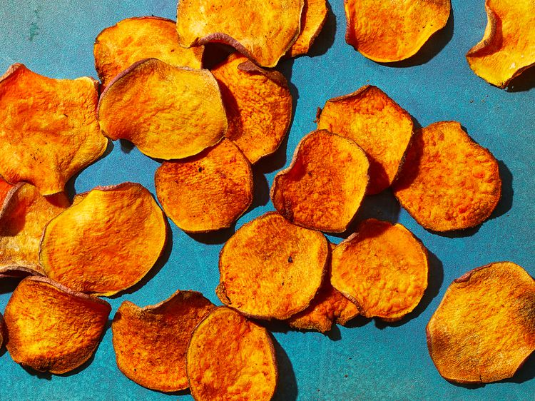

Air Fryer Sweet Potatoes
Air Fryer Sweet Potatoes

Description
These air fryer potatoes are the perfect healthy snack to add to any air fryer line-up! They are simple to prepare and simple to make for that crunchy snack.
Ingredients:
- 1 large (8 ounces) sweet potato
- 1 tablespoon canola oil
- 1/4 teaspoon sea salt
- 1/4 teaspoon freshly ground black pepper
- cooking spray
Steps:
- Slice potato into 1/16-inch-thick rounds using a mandolin. Put potato slices in a large bowl of cold water; soak about 20 minutes. Drain and pat dry with paper towels. Wipe out bowl.
- Return potato slices to dried bowl. Add oil, salt, and pepper; toss gently to coat.
- Preheat air fryer to 350 degrees F (175 degrees C). Lightly coat air fryer basket with cooking spray. Working in batches if needed, arrange potato slices in an even layer in basket (do not overcrowd).
- Cook until lightly golden and crispy, 12 to 16 minutes, turning and rearranging chips into an even layer every 4 minutes. Watch closely during the last 2 to 3 minutes of cooking. Check chips about every 30 seconds, using tongs to remove golden chips from the basket as needed to avoid overcooking and ending up with bitter chips.
- Let chips cool about 5 minutes. Chips will continue to crisp as they cool. Store in an airtight container up to 3 days.